S01 · 西农陈情 LTX
成片0–5秒 · 选入5秒 / 原始5秒 · 种子2026100601
采样观察：西农空手示意、守军看向木马；木马舱盖保持关闭。LTX补跑避开原H3提前开舱，脸部细节仍有漂移。
首帧、动作描述与时间采样
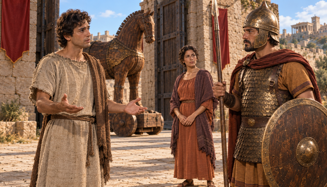
Live-action, cinematic 1970s Shaw Brothers historical Troy, with handmade sandstone and timber, aged bronze armor and saturated 35mm film colors. Continue naturally from the supplied first frame, preserving the visible actors, faces, costumes, composition and current state. In bright daylight outside the open gate, the three existing people remain in their own positions. Sinon on the left opens both empty hands toward the rigid wooden horse, then lowers one hand as the guard looks toward the horse. The bronze-helmeted guard keeps his spear in his right hand and shield on his left arm. The woman watches from behind. Subtle breathing and facial reactions; mouths stay closed. The wooden horse remains a rigid timber object on wheels, its side hatch closed. No extra people, duplicated named actor, extra limbs, modern objects, captions or fantasy effects. A slow small push toward Sinon. Day wind, fabric rustle and faint armor creaks. No dialogue or singing. No background music.
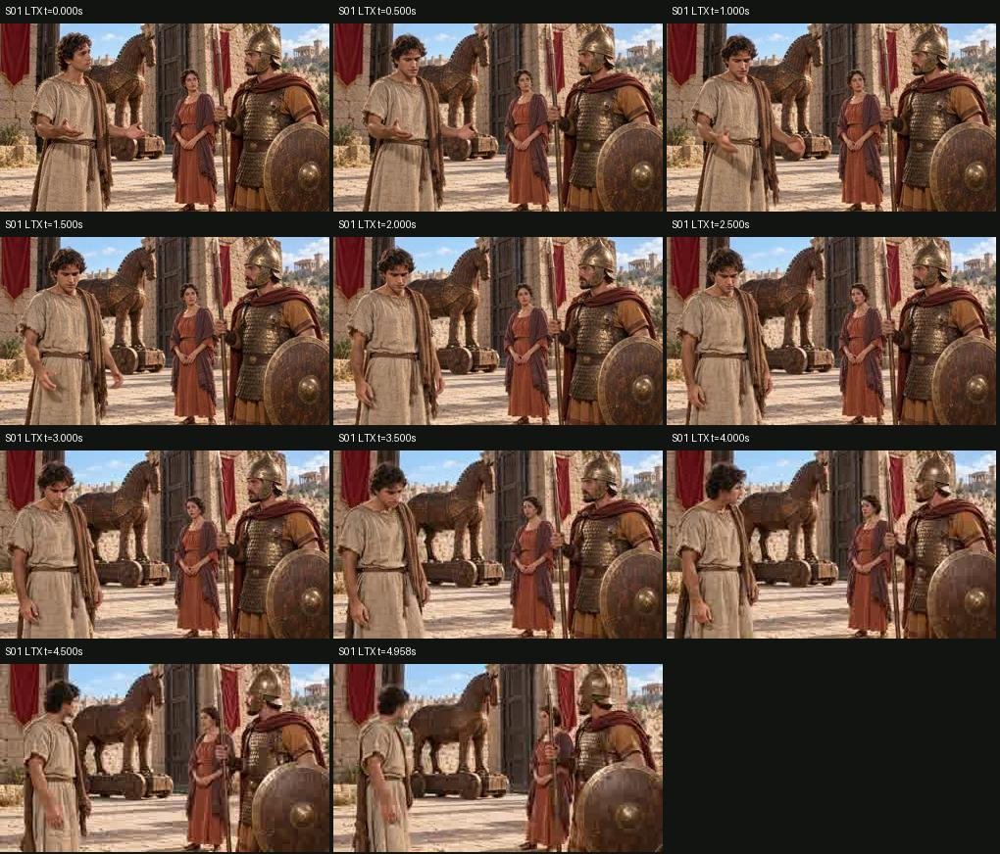
S02 · 守卫放行 LTX
成片5–10秒 · 选入5秒 / 原始5秒 · 种子2026100602
采样观察：搬运者拉绳迈步、守卫保留长矛和盾牌，白昼稳定；后段画面右侧出现木质车体碎块，空间和道具衔接仍需修正。
首帧、动作描述与时间采样
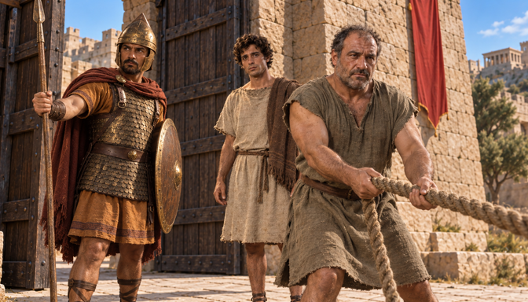
Live-action, cinematic 1970s Shaw Brothers historical Troy, with handmade sandstone and timber, aged bronze armor and saturated 35mm film colors. Continue naturally from the supplied first frame, preserving the visible actors, faces, costumes, composition and current state. In bright daylight the existing guard steps sideways away from the gateway while keeping his long spear upright in his right hand and round shield on his left arm. The foreground worker leans forward and takes two firm hauling steps, pulling the rope taut with both hands. Sinon behind him lowers his empty hands and watches. Keep the same three people and daylight throughout. The hauling rope leads toward the offscreen wooden horse. No extra people, duplicated named actor, extra limbs, modern objects, captions or fantasy effects. A steady medium shot. Rope strain, two scraping footfalls and shield straps. No dialogue, intelligible speech, singing or background music.
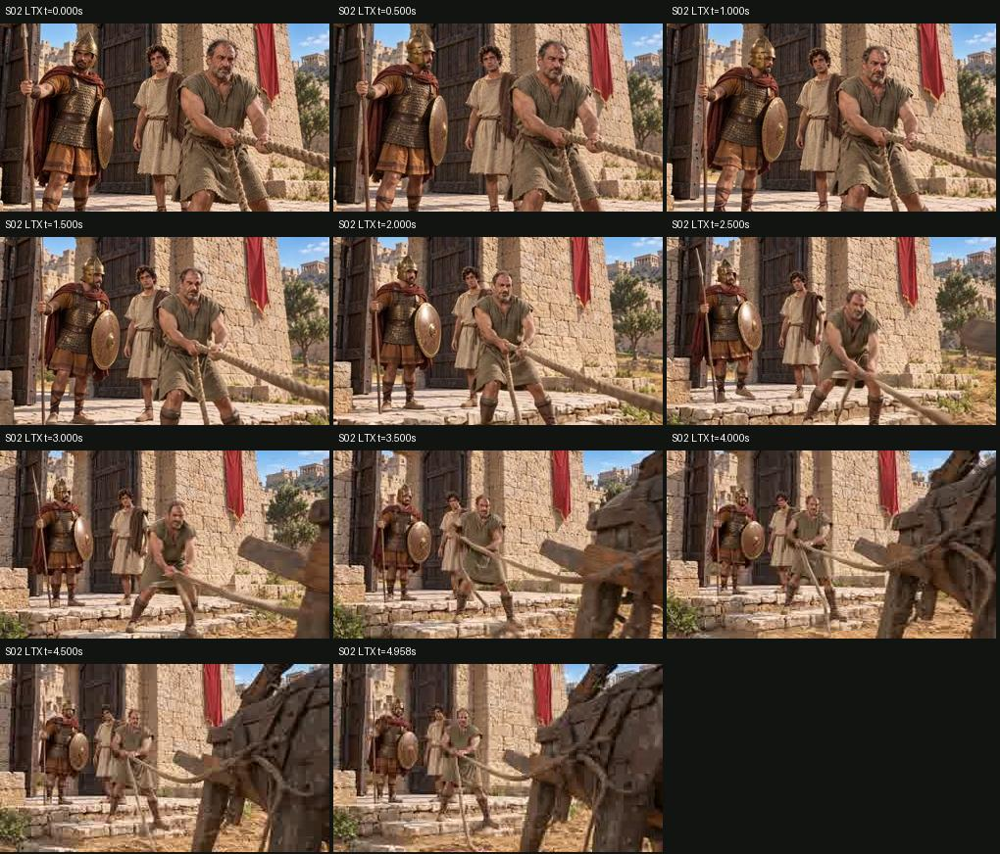
S03 · 木轮越过门槛 LTX
成片10–15秒 · 选入5秒 / 原始5秒 · 种子2026100603
采样观察：轮子转动、车架越过门槛的动作可辨；车轮几何和跨镜运动方向仍不够稳定。
首帧、动作描述与时间采样
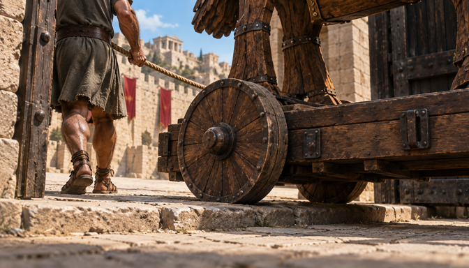
Live-action, cinematic 1970s Shaw Brothers historical Troy, with handmade sandstone and timber, aged bronze armor and saturated 35mm film colors. Continue naturally from the supplied first frame, preserving the visible actors, faces, costumes, composition and current state. The wooden wheel begins rotating immediately and rolls over the raised stone threshold toward the interior of Troy. The worker steps in the same direction, away from the camera and into the gateway. The axle, horse legs and timber platform move together as one rigid cart; only the wheel rotates. Stone dust shifts beneath the load. The wooden horse never bends its legs or walks. No extra people, duplicated named actor, extra limbs, modern objects, captions or fantasy effects. Low close tracking beside the wheel. Heavy wooden wheel thumps, axle creaks and shoe scrapes. No dialogue, intelligible speech, singing or background music.
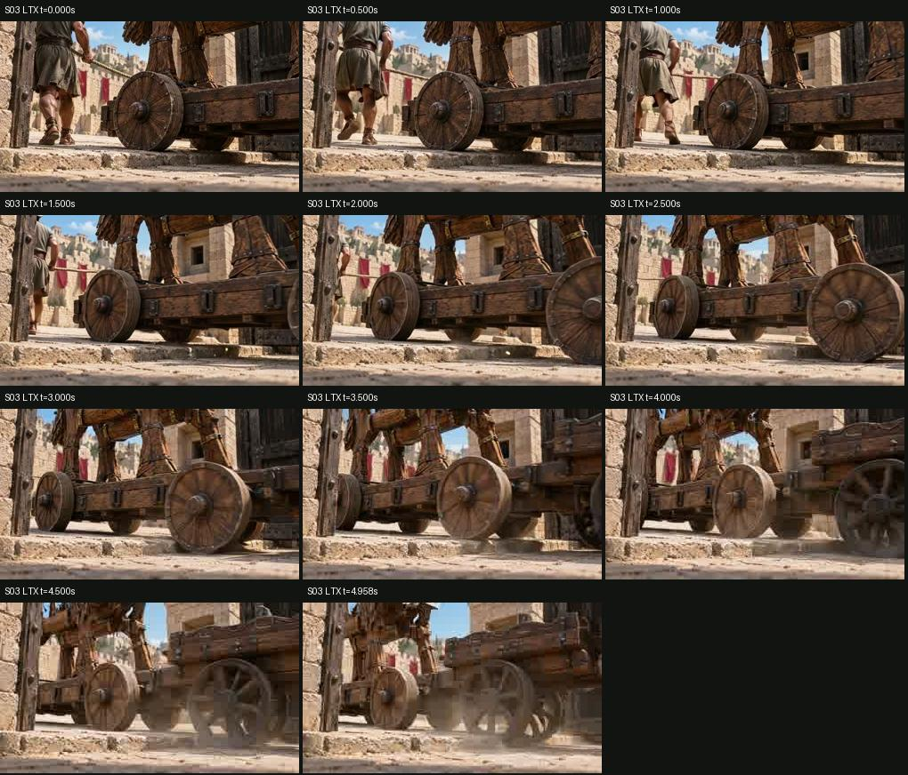
S04 · 木马进入广场 LTX
成片15–20秒 · 选入5秒 / 原始5秒 · 种子2026100604
采样观察：白昼保持，两名搬运者拉动木马，旁观者让开；没有变成夜景，细部接触未逐帧认证。
首帧、动作描述与时间采样
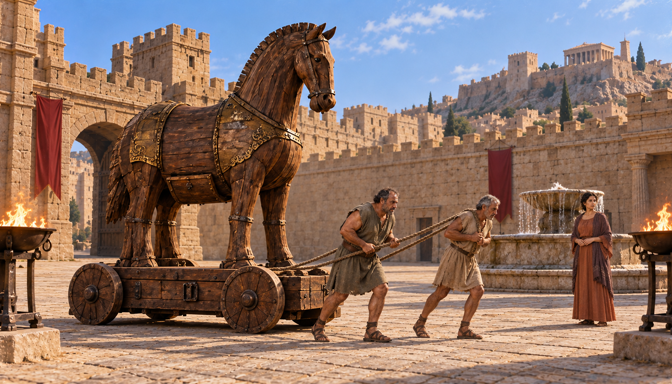
Live-action, cinematic 1970s Shaw Brothers historical Troy, with handmade sandstone and timber, aged bronze armor and saturated 35mm film colors. Continue naturally from the supplied first frame, preserving the visible actors, faces, costumes, composition and current state. In bright daylight two existing workers pull the taut rope toward screen right. Their alternating steps draw the rigid timber horse and its four-wheel platform toward the right side of the square. The woman on the right watches and takes a small step clear. All visible wheels roll with the platform while the horse body, head and wooden legs stay rigid. The stone gate remains rear left and the fountain remains right. Maintain the bright blue daytime sky. No extra people, duplicated named actor, extra limbs, modern objects, captions or fantasy effects. A small lateral tracking move with the cart. Rope strain, rotating wood wheels, footsteps and fountain water. No dialogue, intelligible speech, singing or background music.
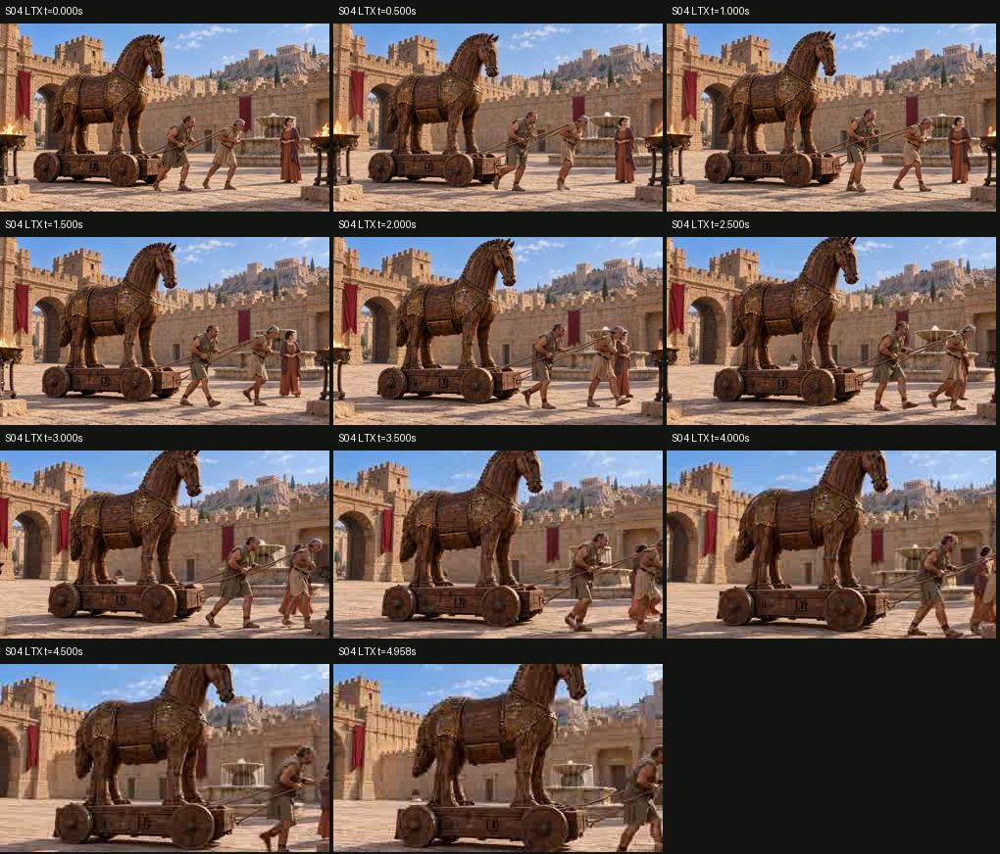
S05 · 暮色停驻 LTX
成片20–25秒 · 选入5秒 / 原始5秒 · 种子2026100605
采样观察：暮色、行人离开、木马停驻；舱盖关闭，未提前出现梯子。
首帧、动作描述与时间采样
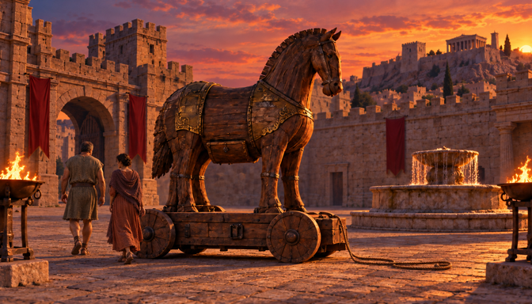
Live-action, cinematic 1970s Shaw Brothers historical Troy, with handmade sandstone and timber, aged bronze armor and saturated 35mm film colors. Continue naturally from the supplied first frame, preserving the visible actors, faces, costumes, composition and current state. At dusk the rigid wooden horse is already parked. The two existing civilians keep walking away toward screen left and pass out of the immediate foreground. The platform and wheels remain still, the ropes lie slack, the belly hatch stays shut, and no ladder appears. Sunset light stays warm; braziers flicker beside the fountain. No extra people, duplicated named actor, extra limbs, modern objects, captions or fantasy effects. A steady wide shot. Departing footsteps, evening wind, fire crackle and fountain water. No dialogue, intelligible speech, singing or background music.
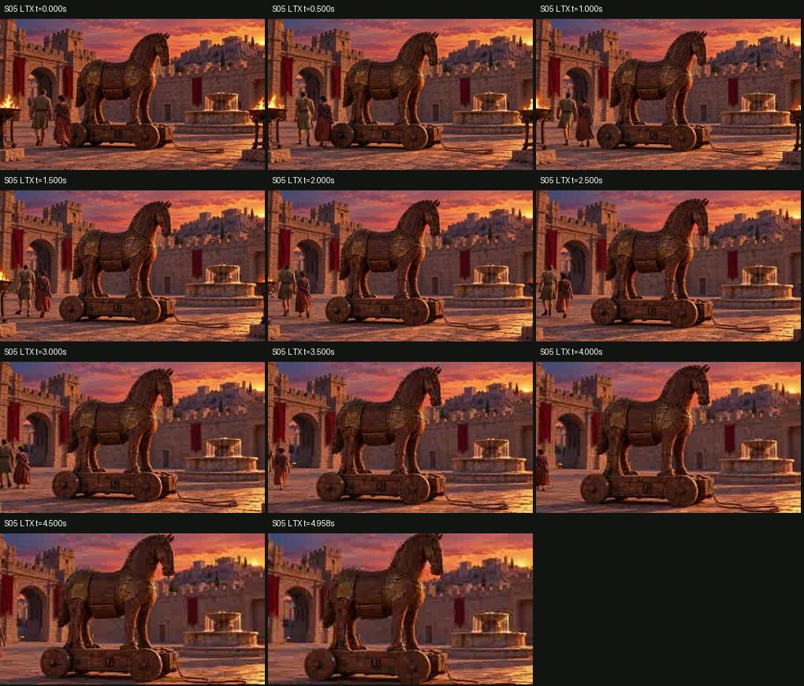
S06 · 暮色关城门 LTX
成片25–30秒 · 选入5秒 / 原始5秒 · 种子2026100606
采样观察：守卫双手按压一根门闩后松手，门保持关闭，武器靠墙；首帧已是关门状态，因此本镜表现加固而非完整关门过程。
首帧、动作描述与时间采样
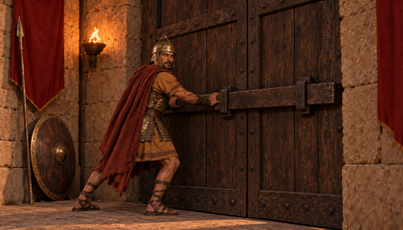
Live-action, cinematic 1970s Shaw Brothers historical Troy, with handmade sandstone and timber, aged bronze armor and saturated 35mm film colors. Continue naturally from the supplied first frame, preserving the visible actors, faces, costumes, composition and current state. One guard stands beside the already closed double wooden gate at dusk. His spear and shield stay leaning against the left wall. With both empty hands he settles the existing single horizontal wooden bar firmly into its two sockets and presses it once to check the lock, then releases the bar and listens. The gate stays closed, the bar stays one continuous rigid piece, and no other person enters. No extra people, duplicated named actor, extra limbs, modern objects, captions or fantasy effects. A fixed medium-wide view. A brief wooden scrape and locking thud, followed by quiet wind. No dialogue, intelligible speech, singing or background music.
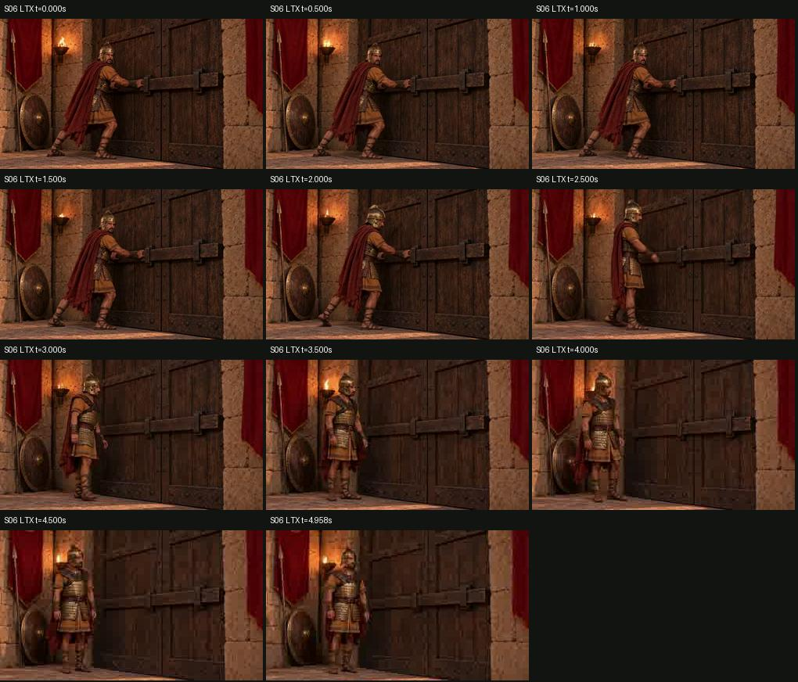
S07 · 夜间静场 LTX
成片30–35秒 · 选入5秒 / 原始5秒 · 种子2026100607
采样观察：LTX补跑保持空场、闭舱、无梯子，火焰和水面有变化；木马局部细节仍可能漂移。
首帧、动作描述与时间采样
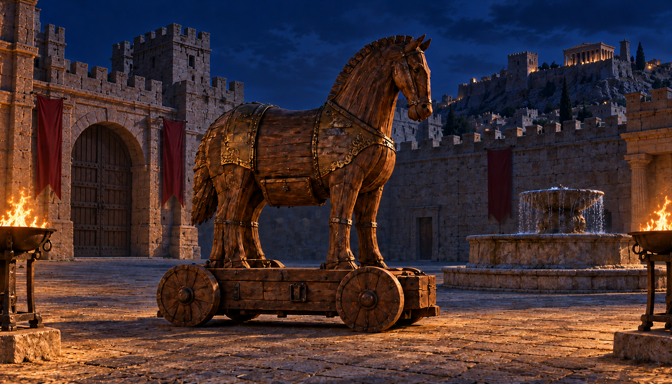
Live-action, cinematic 1970s Shaw Brothers historical Troy, with handmade sandstone and timber, aged bronze armor and saturated 35mm film colors. Continue naturally from the supplied first frame, preserving the visible actors, faces, costumes, composition and current state. The empty square remains unoccupied at night. The rigid timber horse stands parked center-left, facing right, its belly hatch closed and with no visible ladder. The stone gate at rear left stays shut. Flame tips flutter and the fountain water continues flowing; moonlight and amber firelight remain steady. No extra people, duplicated named actor, extra limbs, modern objects, captions or fantasy effects. An extremely slow wide push. Fountain water, fire crackle and night wind only. No dialogue or singing. No background music.
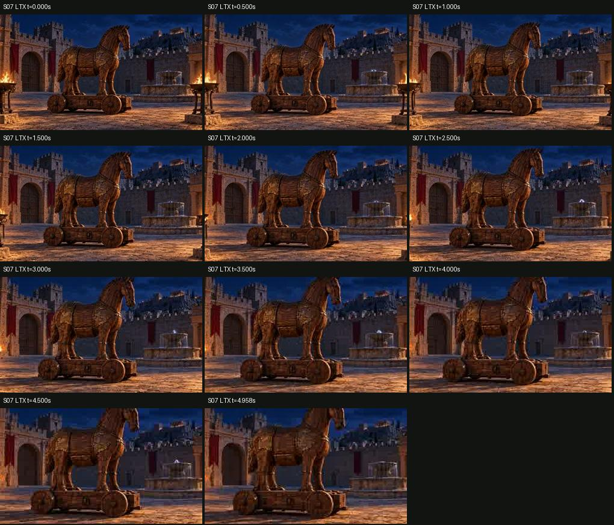
S08 · 侧舱试探开启 LTX
成片35–40秒 · 选入5秒 / 原始5秒 · 种子2026100608
采样观察：奥德修斯在已经开启的舱口探看、低头，镜头推近；未清楚完成完整抬盖动作，后段面部和木结构细节下降。
首帧、动作描述与时间采样
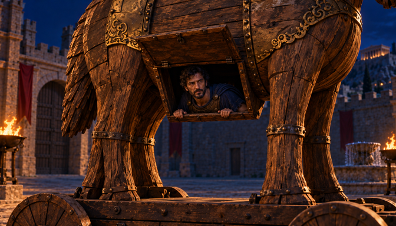
Live-action, cinematic 1970s Shaw Brothers historical Troy, with handmade sandstone and timber, aged bronze armor and saturated 35mm film colors. Continue naturally from the supplied first frame, preserving the visible actors, faces, costumes, composition and current state. A single Odysseus is inside the partly open camera-facing belly hatch. He pushes the top-hinged flap farther upward with both hands until it stays above his head, then leans his head forward and looks left and right into the square. His torso stays inside the horse; his sword remains sheathed at his left hip. No one is on the ground and no ladder appears in this shot. No extra people, duplicated named actor, extra limbs, modern objects, captions or fantasy effects. A gentle close push toward the hatch. Wood hinge creak, restrained breathing and distant fire. No dialogue, intelligible speech, singing or background music.
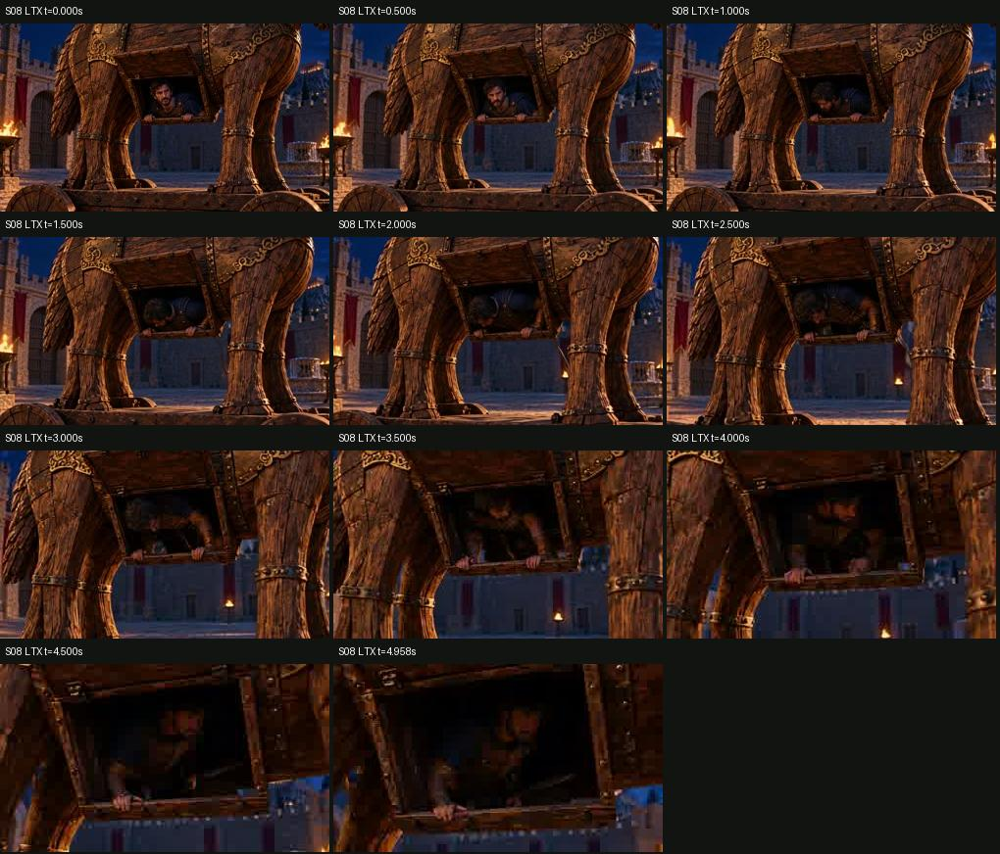
S09 · 放下木梯 LTX
成片40–42秒 · 选入2秒 / 原始5秒 · 种子2026100609
采样观察：原5秒下降后接近落地，会与S10重新回到梯子中段冲突；成片只用前2秒，保留继续下梯的衔接。身体朝向和脚部接触仍不完全符合动作要求。
首帧、动作描述与时间采样
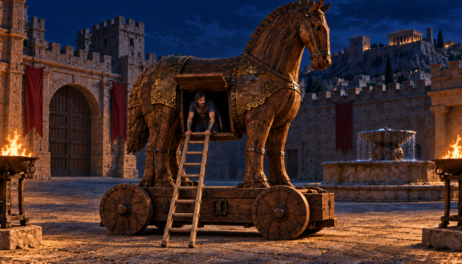
Live-action, cinematic 1970s Shaw Brothers historical Troy, with handmade sandstone and timber, aged bronze armor and saturated 35mm film colors. Continue naturally from the supplied first frame, preserving the visible actors, faces, costumes, composition and current state. The one wooden ladder is already placed from the open belly hatch onto the stone paving. Odysseus remains at its upper end with his body facing the horse. He steadies both ladder rails, tests the first rung with one foot, then brings his other foot onto the next rung to begin a cautious downward descent. His head and hips move lower, away from the hatch. The raised top-hinged flap and rigid horse do not move. His sword stays sheathed and he has no shield. No extra people, duplicated named actor, extra limbs, modern objects, captions or fantasy effects. A steady medium-wide shot. Ladder rung creaks, leather movement and a soft footfall. No dialogue, intelligible speech, singing or background music.
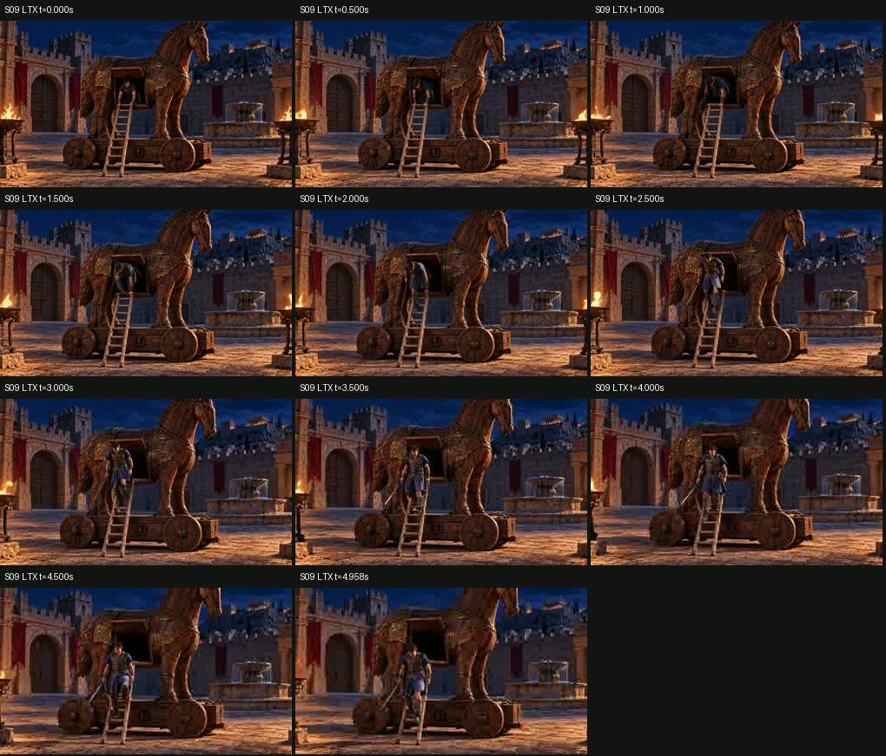
S10 · 奥德修斯下梯 LTX
成片42–47秒 · 选入5秒 / 原始5秒 · 种子2026100610
采样观察：头、髋和脚向更低梯级移动并落地，采样未见反向上爬；握持和脚步接触未逐帧认证。
首帧、动作描述与时间采样
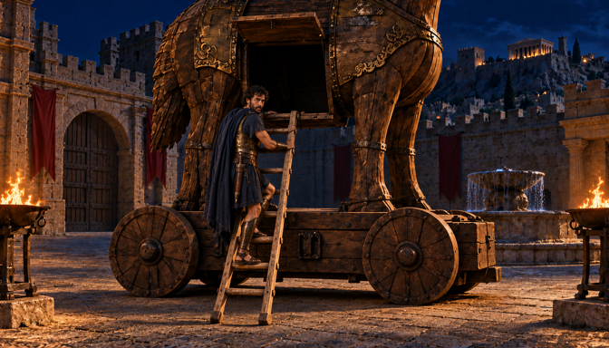
Live-action, cinematic 1970s Shaw Brothers historical Troy, with handmade sandstone and timber, aged bronze armor and saturated 35mm film colors. Continue naturally from the supplied first frame, preserving the visible actors, faces, costumes, composition and current state. One Odysseus faces the wooden horse while descending the existing single ladder. Beginning from the reference pose, his lower foot steps DOWN onto the next lower rung; his other foot follows to a rung below. His hands slide DOWN the rails and his head, shoulders and hips visibly move closer to the paving. Continue two downward rung changes at normal real-time speed. He never moves back toward the hatch. Sword sheathed at his left hip, both hands gripping rails, no shield. The horse, wheels and ladder feet stay fixed. No extra people, duplicated named actor, extra limbs, modern objects, captions or fantasy effects. A locked full-body medium-wide view. Rung creaks, leather straps and soft bronze rattles. No dialogue, intelligible speech, singing or background music.
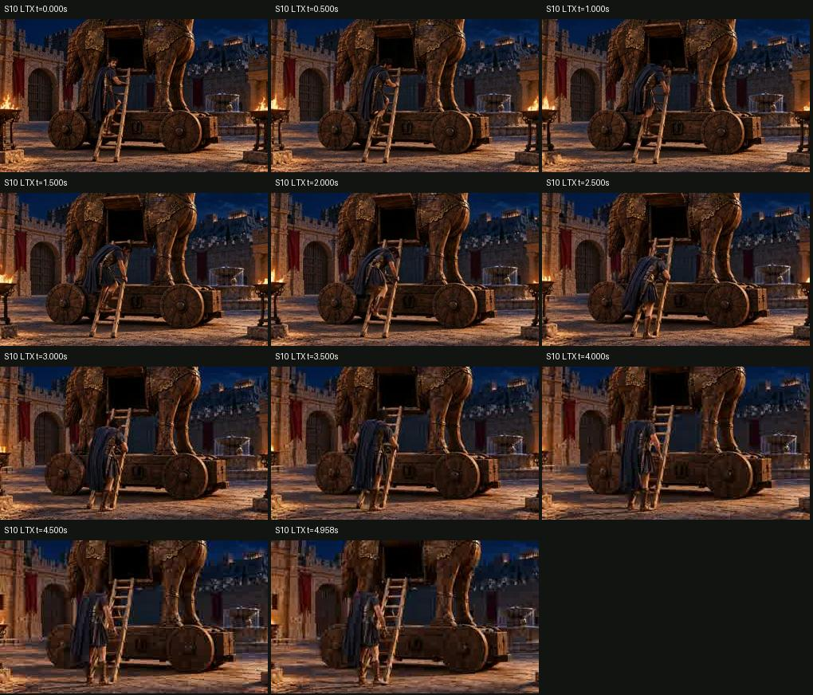
S11 · 落地示意 LTX
成片47–49.5秒 · 选入2.5秒 / 原始5秒 · 种子2026100611
采样观察：先示意、看向侧方，约后半段又转身走回木马；成片只用前2.5秒保留信号。
首帧、动作描述与时间采样
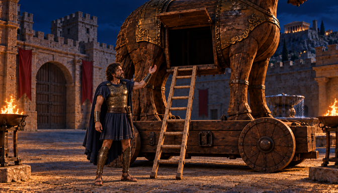
Live-action, cinematic 1970s Shaw Brothers historical Troy, with handmade sandstone and timber, aged bronze armor and saturated 35mm film colors. Continue naturally from the supplied first frame, preserving the visible actors, faces, costumes, composition and current state. Odysseus is already standing on the ground beside the ladder. He glances toward the closed city gate, raises his empty left hand in a compact beckoning signal toward the hatch, then lowers it and turns his torso toward the gate. His sword remains sheathed at his left hip and his other hand remains empty. The hatch above him is empty; no duplicate actor appears. No extra people, duplicated named actor, extra limbs, modern objects, captions or fantasy effects. A small medium push. One footstep, cloth rustle, fountain water and distant fire. No dialogue, intelligible speech, singing or background music.
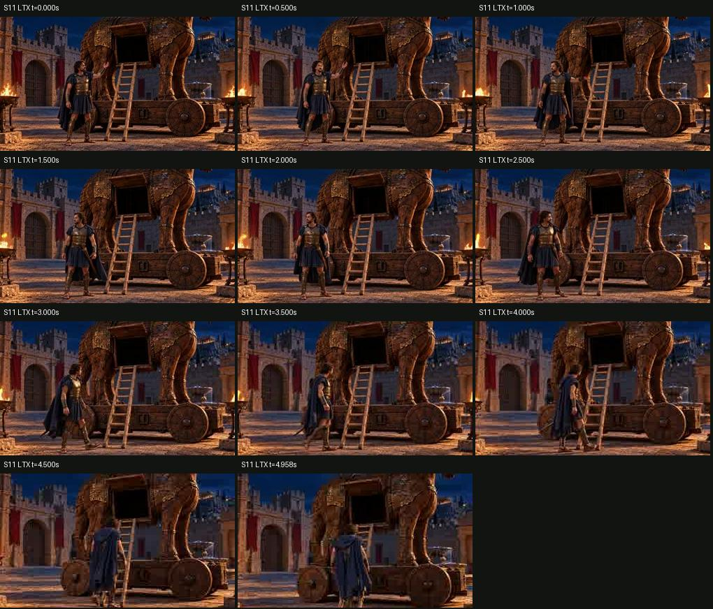
S12 · 随队士兵跟出 LTX
成片49.5–54.5秒 · 选入5秒 / 原始5秒 · 种子2026100612
采样观察：年轻士兵沿梯下行、落地后转身，背盾保留，未见逆向上爬；两名演员的细部一致性仍需后续复核。
首帧、动作描述与时间采样
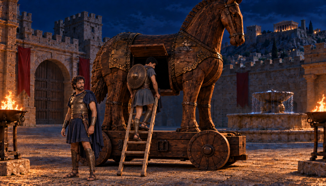
Live-action, cinematic 1970s Shaw Brothers historical Troy, with handmade sandstone and timber, aged bronze armor and saturated 35mm film colors. Continue naturally from the supplied first frame, preserving the visible actors, faces, costumes, composition and current state. The same two Greek men remain distinct. Odysseus stands on the ground on the left watching the gate. The young clean-shaven soldier on the existing ladder faces the horse and climbs DOWN two rungs, alternating feet to lower his head and hips closer to the paving while both hands slide down the rails. His one round shield stays strapped on his back and his sword stays sheathed at his left hip. He does not climb upward. The hatch stays empty behind him. No extra people, duplicated named actor, extra limbs, modern objects, captions or fantasy effects. A fixed medium-wide view. Rung creaks, leather shield straps and careful footsteps. No dialogue, intelligible speech, singing or background music.
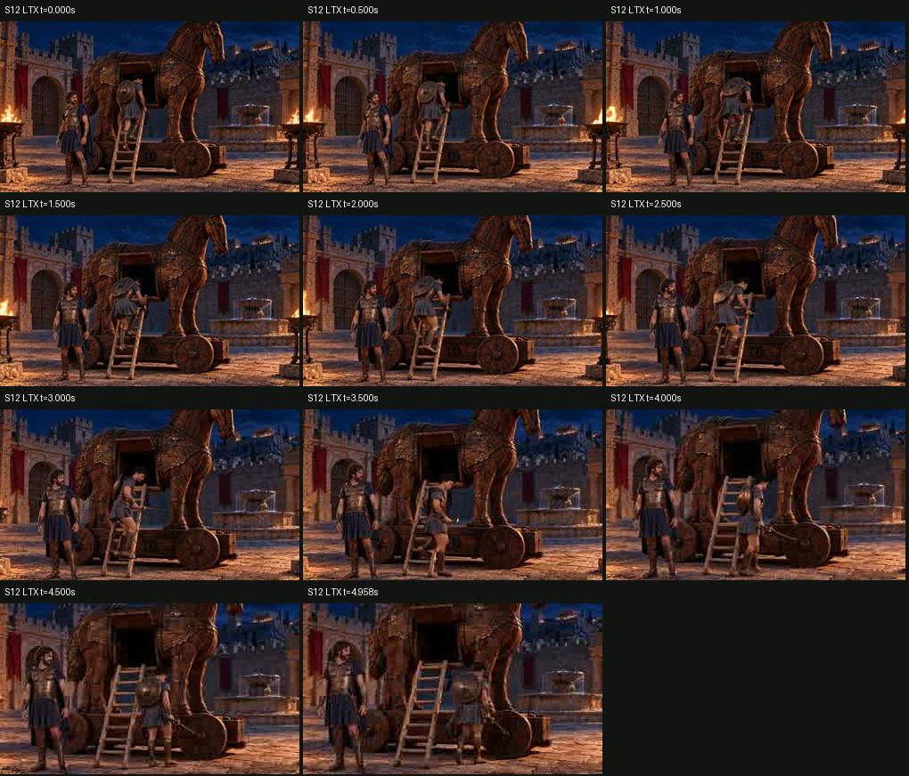
S13 · 伏兵集结备战 LTX
成片54.5–59.5秒 · 选入5秒 / 原始5秒 · 种子2026100613
采样观察：六人远离木马、朝镜头方向推进，主要持剑和持盾关系可辨；后排身份、人数和步态细节仍有漂移。
首帧、动作描述与时间采样
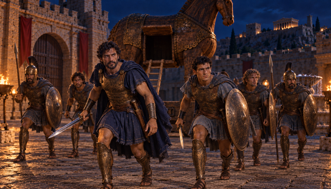
Live-action, cinematic 1970s Shaw Brothers historical Troy, with handmade sandstone and timber, aged bronze armor and saturated 35mm film colors. Continue naturally from the supplied first frame, preserving the visible actors, faces, costumes, composition and current state. The existing six Greek fighters advance away from the wooden horse and toward the camera, where the closed city gate lies offscreen. Odysseus leads with the same sword held low in his right hand and his left hand empty; he has no shield. The young soldier alongside him keeps his sword right and round shield left. The four different rear fighters follow for three quick quiet steps in staggered formation. No one turns back toward the horse. Their shoulders and knees drive forward progress at normal speed. No extra people, duplicated named actor, extra limbs, modern objects, captions or fantasy effects. A short backward tracking move keeping the leading men in frame. Quick stone footsteps, armor rattle and controlled breathing. No dialogue, intelligible speech, singing or background music.
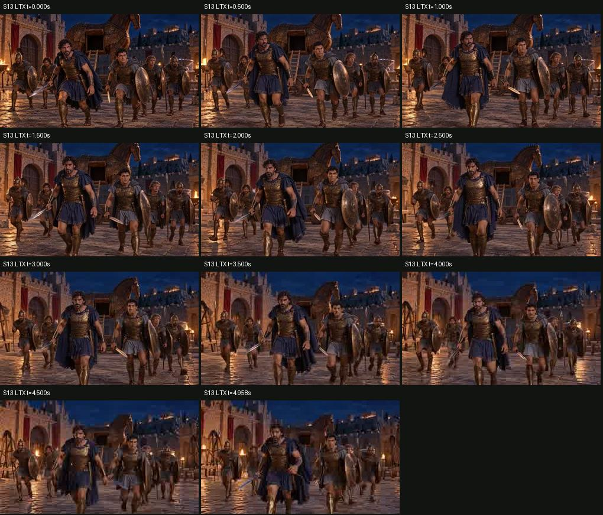
S14 · 守军发现突袭 LTX
成片59.5–64.5秒 · 选入5秒 / 原始5秒 · 种子2026100614
采样观察：守卫前举长矛和盾牌，后方兵线逐步压上；群体人数、人体与武器遮挡交叠不稳定。
首帧、动作描述与时间采样
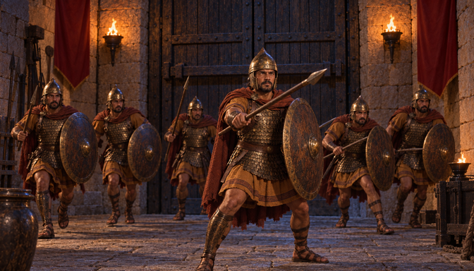
Live-action, cinematic 1970s Shaw Brothers historical Troy, with handmade sandstone and timber, aged bronze armor and saturated 35mm film colors. Continue naturally from the supplied first frame, preserving the visible actors, faces, costumes, composition and current state. The foreground Trojan guard sees the offscreen intruders and instantly plants his feet, raises the same long spear in his right hand toward the attackers and brings his left-arm shield forward. The five existing defenders run two quick steps to close the line behind him, then brace their own shields. Keep the closed double gate and seated horizontal bar behind them. Maintain the full length of every spear; do not turn spears into swords. No extra people, duplicated named actor, extra limbs, modern objects, captions or fantasy effects. A steady medium-wide view. Running footsteps, armor clatter and one offscreen bronze alarm strike. No dialogue, intelligible speech, singing or background music.
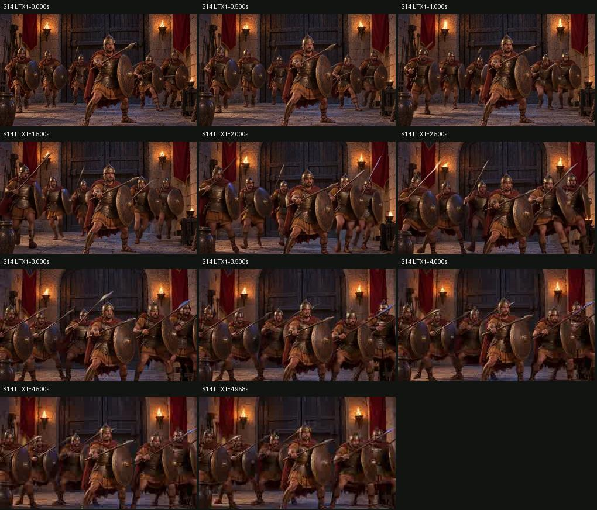
S15 · 门内短兵相接 LTX
成片64.5–69.5秒 · 选入5秒 / 原始5秒 · 种子2026100615
采样观察：有多次攻击、格挡、分离和侧向步法，动作阶段更丰富；约1至2秒守卫长矛缩短成剑状，手和盾交叠有伪影，整体构图偏移。
首帧、动作描述与时间采样

Live-action, cinematic 1970s Shaw Brothers historical Troy, with handmade sandstone and timber, aged bronze armor and saturated 35mm film colors. Continue naturally from the supplied first frame, preserving the visible actors, faces, costumes, composition and current state. The foreground duel starts immediately at normal real-time speed. The guard plants his lead foot and thrusts his long right-hand spear toward Odysseus. Odysseus steps diagonally aside and strikes the spear shaft upward with his right-hand sword, diverting its point past his shoulder. The weapons separate promptly: the guard withdraws his spear while Odysseus follows with a diagonal sword cut. The guard catches the sword on his left-arm shield and takes one weight-bearing backward step. Odysseus withdraws his sword, the guard thrusts again, and Odysseus slips sideways and parries again. Their knees, hips and feet drive the exchanges without long held contact. The spear stays a single long rigid shaft with one spearhead in the same right hand; Odysseus keeps one sword in his right hand and his left hand empty throughout. Four background soldiers fight as two distinct sword-and-shield pairs, striking, blocking, separating and stepping. The six bodies keep their own original equipment. The wooden gate stays closed. No gore. No extra people, duplicated named actor, extra limbs, modern objects, captions or fantasy effects. A locked full-body medium-wide view. Sharp sword-on-shaft knocks, shield impacts, quick scraping steps, armor and strained breathing. No dialogue, intelligible speech, singing or background music.
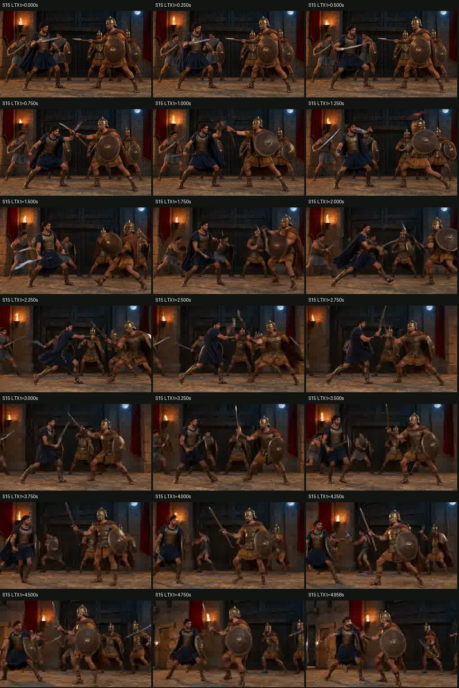
S16 · 掩护之下解除横闩 LTX
成片69.5–74.5秒 · 选入5秒 / 原始5秒 · 种子2026100616
采样观察：两名操作者抬走单根门闩，城门未开；门闩向镜头而非左墙搬运，墙上金属托架随门闩移动，机械结构有误。掩护者有动作但部分接触偏弱。
首帧、动作描述与时间采样
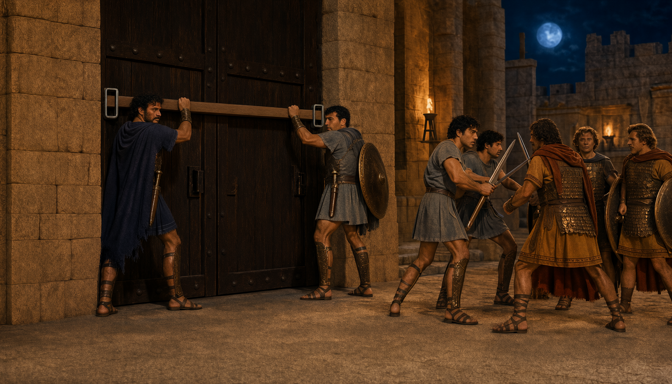
Live-action, cinematic 1970s Shaw Brothers historical Troy, with handmade sandstone and timber, aged bronze armor and saturated 35mm film colors. Continue naturally from the supplied first frame, preserving the visible actors, faces, costumes, composition and current state. Two Greek operators keep their swords fully sheathed and lift the same single horizontal gate bar together with both hands. The young soldier keeps his shield strapped on his back; Odysseus has no shield. The bar rises visibly above both metal brackets, clears the sockets, then both men carry its rigid length toward screen left. The gate leaves remain closed. At the right side the five existing cover fighters exchange short attacks, shield blocks and backward steps, maintaining separate bodies and weapons. The operators never draw weapons. No extra people, duplicated named actor, extra limbs, modern objects, captions or fantasy effects. A locked wide inner-gate view. Bar scraping and a heavy wooden thud with continuous side-forecourt clashes. No dialogue, intelligible speech, singing or background music.
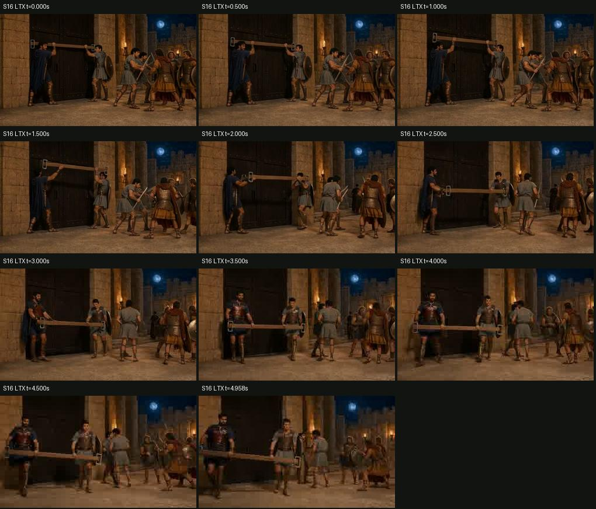
S17 · 阿伽门农率军待突破 H3
成片74.5–76.25秒 · 选入1.75秒 / 原始5秒 · 种子2026100617
采样观察：H3军阵待命、阿伽门农举剑可辨；原素材约2至3秒城门自行提前打开，成片只取前1.75秒闭门段。原5秒整镜未通过剧情状态检查。
首帧、动作描述与时间采样
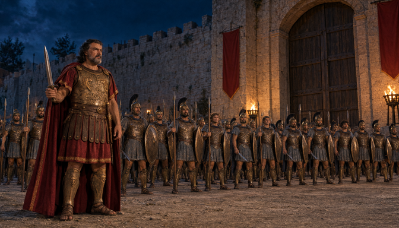
For the target video, at 0.00 seconds into the target video, <Picture 1> (from [Shot 1]) is fully referenced.
integrated_multimodal_description: [Shot 1] Live-action, cinematic 1970s Shaw Brothers historical Troy, with handmade sandstone and timber, aged bronze armor and saturated 35mm film colors. Continue naturally from the supplied first frame, preserving the visible actors, faces, costumes, composition and current state. Outside the closed city gate at night, one Agamemnon in a crimson cloak stands before the Greek army. He raises the same right-hand sword in a compact forward signal, keeping his left hand empty and without a shield. The ranks behind him tighten their shield line and take one measured step, then wait for the opening gate. Preserve the gray-bearded commander and separate individual soldiers, gray-blue uniforms and plain dark crimson banners. No extra people, duplicated named actor, extra limbs, modern objects, captions or fantasy effects.
overall_soundscape: A slow small wide push with several ranks visible. Night wind, banner fabric, measured footfalls and shield straps. No dialogue or singing.
non_diegetic_music: N/A
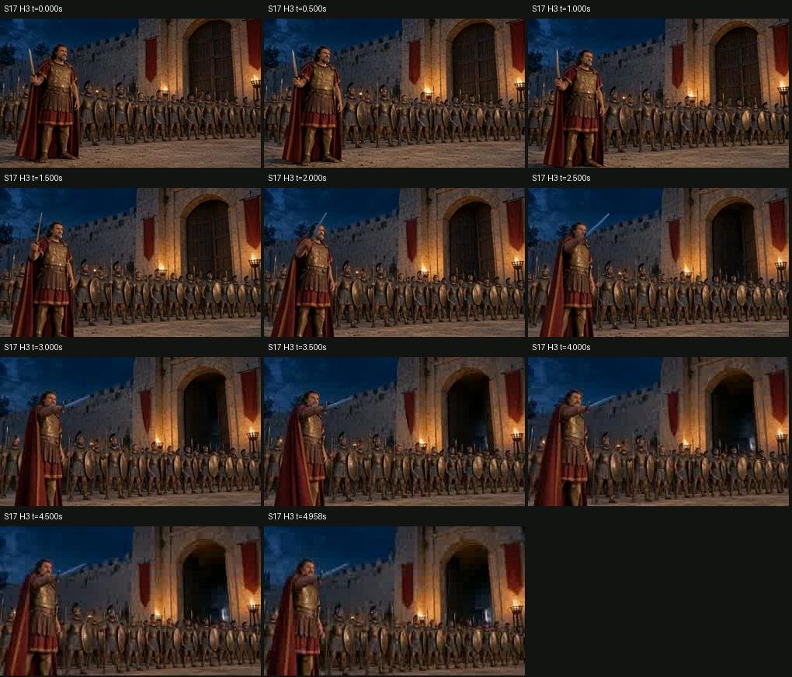
S18 · 交战中推开城门 LTX
成片76.25–81.25秒 · 选入5秒 / 原始5秒 · 种子2026100618
采样观察：门缝逐步扩大至开门，军阵在外；右侧操作者后半段离开推门位置转入打斗，装备和人群交叠仍有漂移。
首帧、动作描述与时间采样
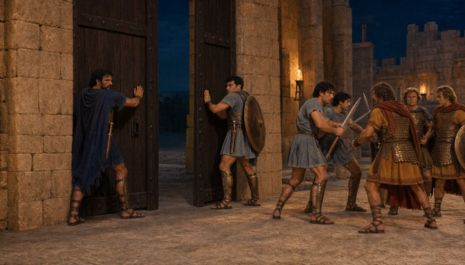
Live-action, cinematic 1970s Shaw Brothers historical Troy, with handmade sandstone and timber, aged bronze armor and saturated 35mm film colors. Continue naturally from the supplied first frame, preserving the visible actors, faces, costumes, composition and current state. The gate bar has already been removed and the wooden door leaves are partly separated. Odysseus on the left pushes the left leaf farther open with both empty hands; the young soldier on the right pushes the right leaf farther open with both empty hands. The central opening steadily widens to show the blue night and waiting army outside. Both swords remain sheathed; the young soldier keeps one shield strapped on his back and Odysseus has no shield. At the right side the existing covering fighters keep exchanging attacks and shield blocks. Keep the same seven people inside this shot; no army crosses yet. No extra people, duplicated named actor, extra limbs, modern objects, captions or fantasy effects. A steady medium-wide inner-gate view. Heavy hinge creaks and wood friction under quick side-forecourt shield clashes. No dialogue, intelligible speech, singing or background music.
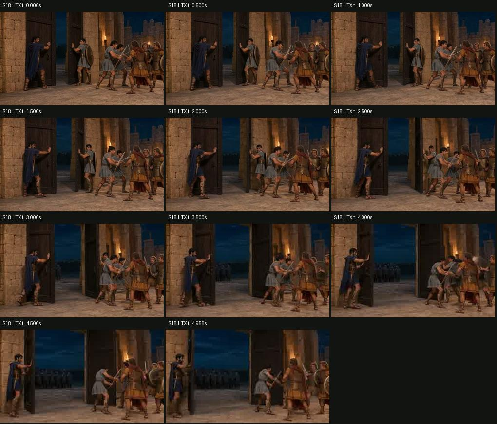
S19 · 军团冲门交锋 LTX
成片81.25–86.25秒 · 选入5秒 / 原始5秒 · 种子2026100619
采样观察：门内前景持续攻击、盾牌碰撞和士兵移动，门保持开启；阿伽门农主要站在后方，带队前进和后排连续入门未充分成立，群体兵器与受力不稳定。
首帧、动作描述与时间采样
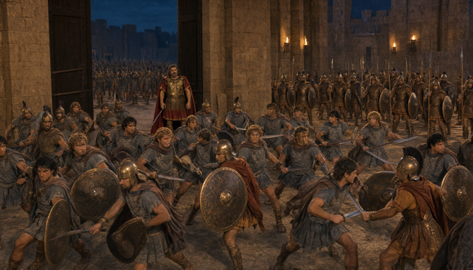
Live-action, cinematic 1970s Shaw Brothers historical Troy, with handmade sandstone and timber, aged bronze armor and saturated 35mm film colors. Continue naturally from the supplied first frame, preserving the visible actors, faces, costumes, composition and current state. Greek gray-blue infantry immediately surge through the fully open gate from the deep background toward the foreground. Front Greek shieldmen collide with the ochre-and-rust Trojan defense line inside the city, strike with their own swords or spears, meet opposing shields, separate and step forward again. Several foreground pairs continue clear attack-and-block exchanges instead of holding crossed weapons. The rear ranks keep entering through the same doorway, establishing continuous reinforcement. Agamemnon in crimson behind the front line advances with one sword right and left hand empty, without a shield. Each fighter keeps the same weapon type, length, shield and hands. The gate stays fully open; no gore. No extra people, duplicated named actor, extra limbs, modern objects, captions or fantasy effects. A short backward tracking move through the inner forecourt. Dense running feet, repeated shield impacts, metal clashes and nonverbal exertion. No dialogue, intelligible speech, singing or background music.
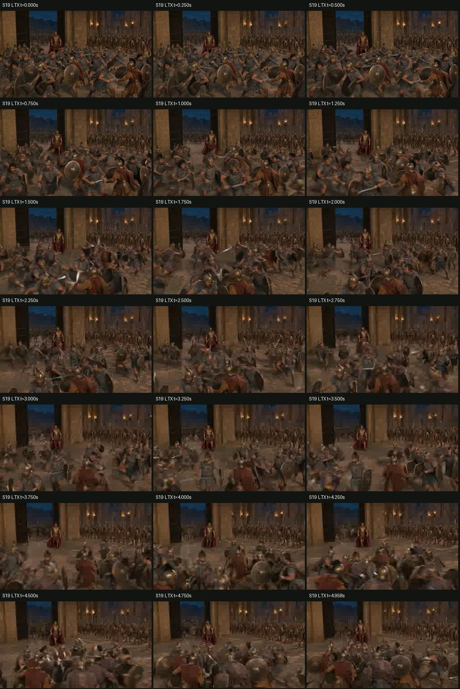
S20 · 广场两军大规模混战 LTX
成片86.25–91.25秒 · 选入5秒 / 原始5秒 · 种子2026100620
采样观察：前中后景均有军队运动和攻防，木马开舱、梯子和开门状态保留；镜头拉远使前景交手缩小或出画，后段有群体移动替代明确交战，武器和人体接触仍不稳定。
首帧、动作描述与时间采样
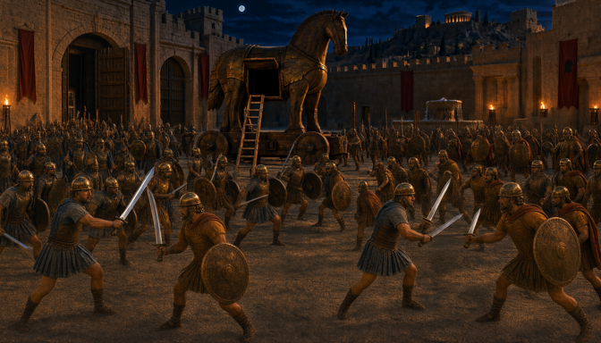
Live-action, cinematic 1970s Shaw Brothers historical Troy, with handmade sandstone and timber, aged bronze armor and saturated 35mm film colors. Continue naturally from the supplied first frame, preserving the visible actors, faces, costumes, composition and current state. The large battle is already underway and continues at normal real-time speed. In the foreground the left Greek sword fighter advances and strikes the opposite Trojan shield; the defender catches the blow and steps back, their weapons separate, and the defender counters. The right foreground pair performs a separate short spear thrust, shield block and side step. Each of the four foreground fighters keeps one original rigid weapon and one original shield with the same hand ownership. Across the middle ground the gray-blue Greek shield line advances against the ochre-and-rust Trojan line, contact pushes shields backward, and both lines keep taking grounded steps. More Greek troops continue arriving from the open gate at rear left. The parked wooden horse stays rigid, with one open empty hatch and one fixed ladder; the fountain remains on the right. All fighters are anonymous; no named hero is added. Maintain active fighting at several depths rather than a synchronized crowd pose. No gore. No extra people, duplicated named actor, extra limbs, modern objects, captions or fantasy effects. A steady elevated wide view. Continuous footsteps, distinct shield thuds, sword and spear clashes, with faint fountain water and fire. No dialogue, intelligible speech, singing or background music.
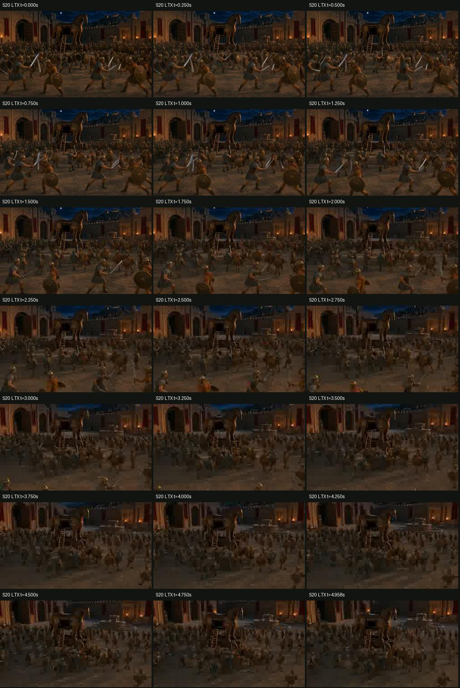